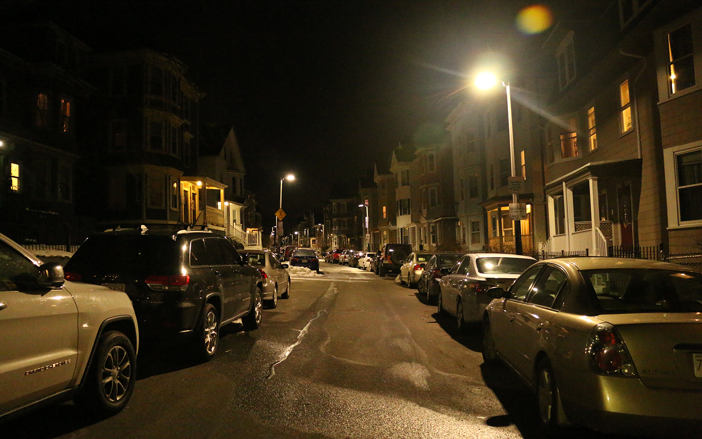
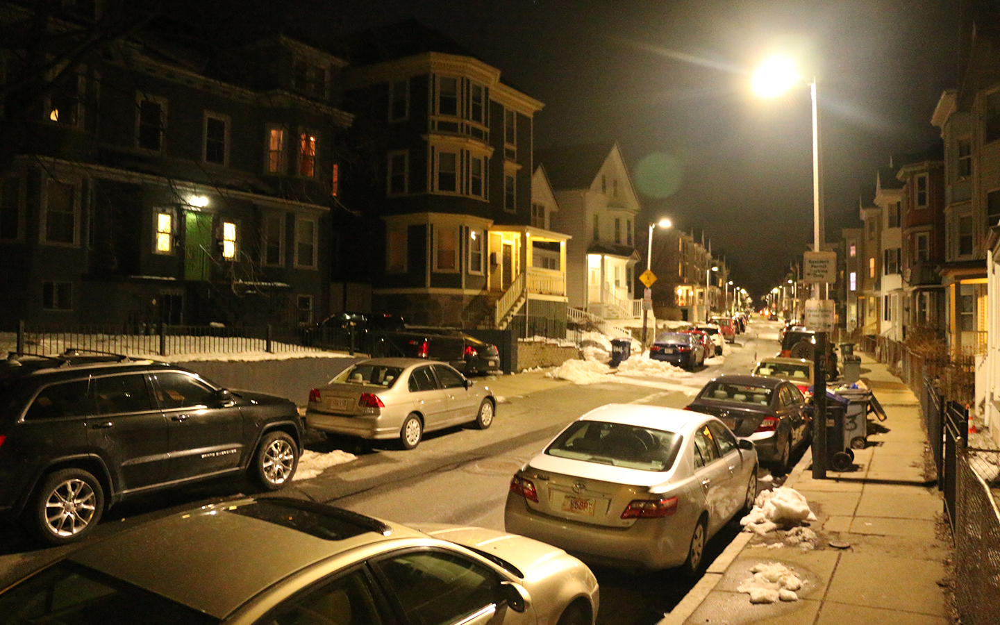
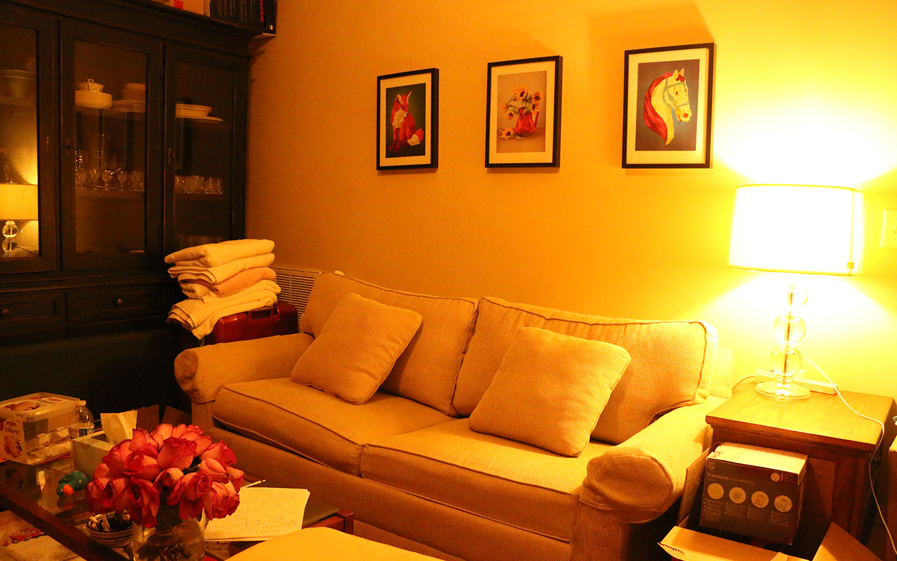
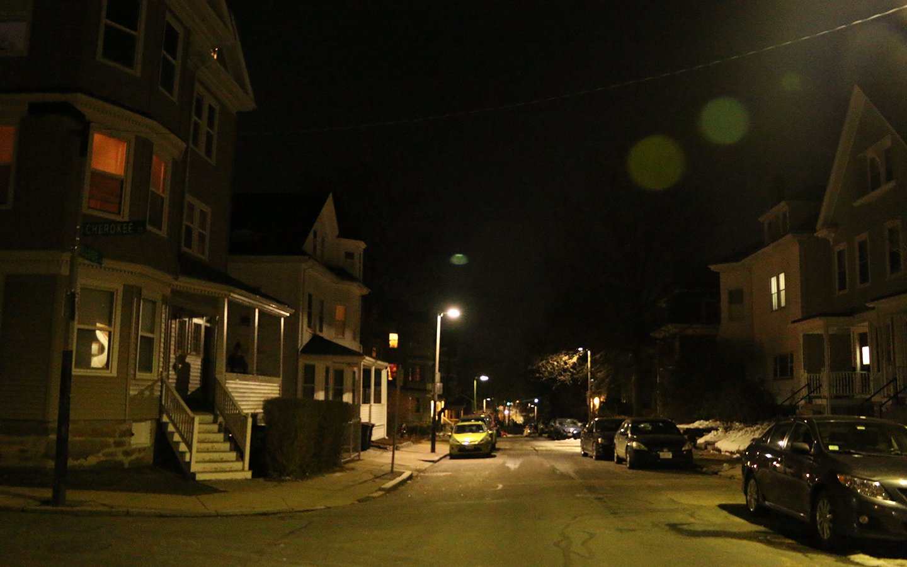
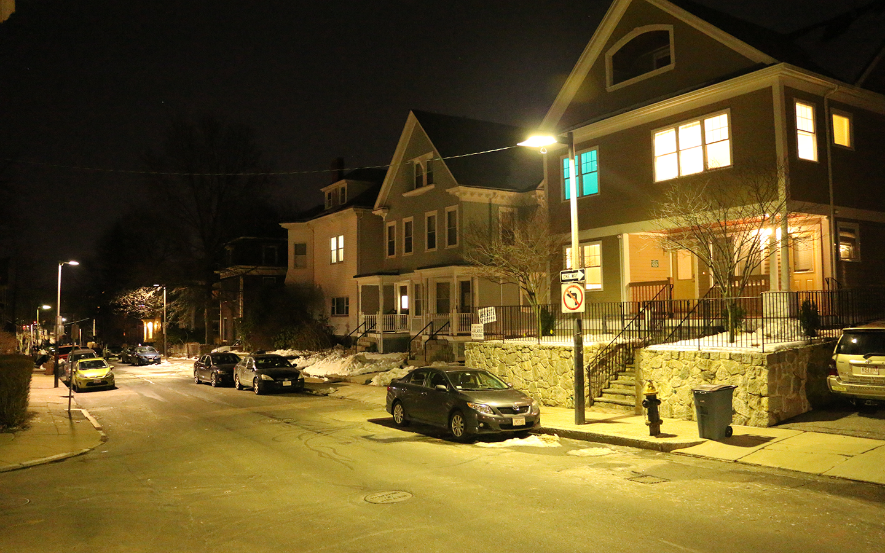
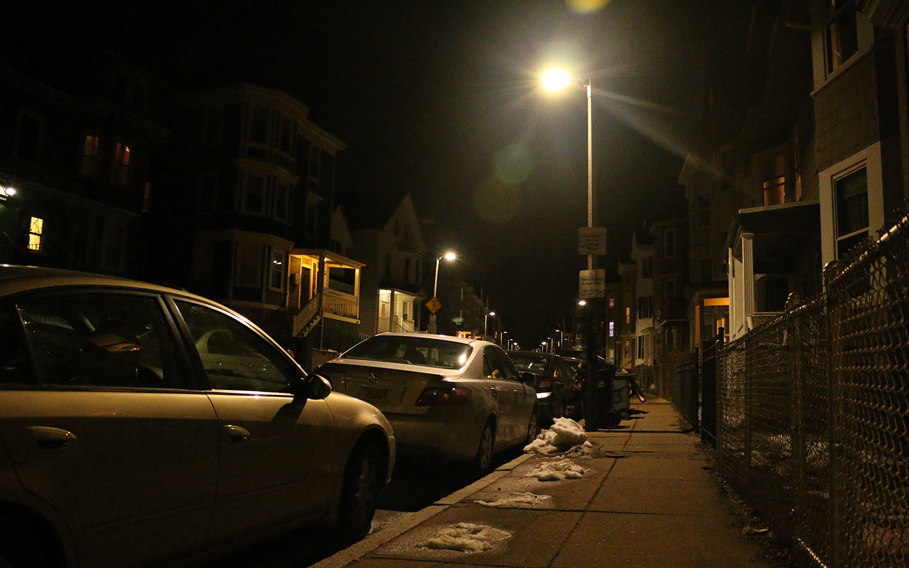
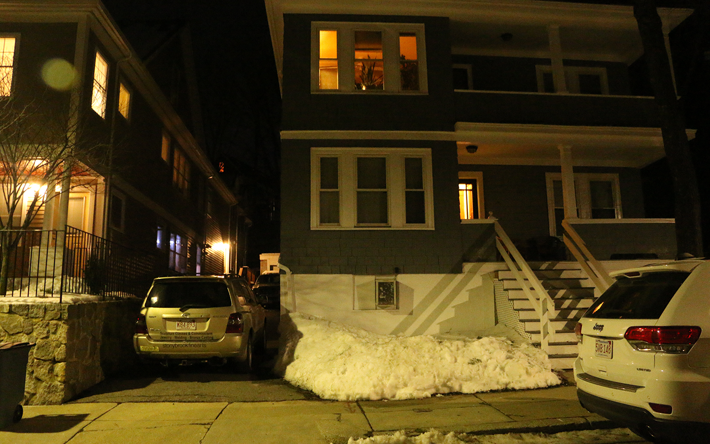

Steve Johnson.
He is 25 years old now. Last three years, he spent in jail for a mysterious robbery. He and Andy, his friend, sneaked into a rich man’s house. They succeed to open his safe, stole some jewelry but that’s it, cops didn’t find where they hid those stuff.
Steve is not a dangerous criminal. He was just a thief. However, in that time, he really needed some money for his mom’s disease.
He thought he could change his tragedy with this adventure. But he failed.
Not because he got arrested but his mom dead when he was in jail.
Now he feels regretful for his past and tries to be a civil citizen.
This day when Steven walks in Charlestown street at night, he just finished his tiring job and wanted to go home, he finds two people are struggling with each other not far away.
Steve walks closer to them. Steve goes home directly.

When he tries to find another way home, he hears the screaming from the victim. It sounds a young student. He knows there are some students live here.
Steve hesitates.
Steve changes his direction and runs to them. Steve still goes home.

Steve arrives home. After a tiring day, he walks into the bathroom.
He takes a long shower because he wants to relax and makes him relieved from the terrible memory that he just saw, but he failed. He recalls that scene repeatedly. Moreover, he finds that thug’s figure is so familiar. After that shower, he doesn’t go to bed. Some memories eat him up inside gradually. He opens TV and switch to news, but he doesn’t see the horrible crime scene is reported. Of course, it wouldn’t show up in the news, it just happened before several hours. Steve may find news about that crime in tomorrow but he hopes he will never see that report.
Restart.

When Steve gets close to that two people, at first, he just wants to figure out what happened, if there’s someone is attacked, he wants to help him. He is never a brave guy who desires to be a hero, even when he was a child. However, at least, he still has a little conscience. If it’s just a normal fighting, he doesn’t want to get involved in it, but it’s not going as he thought. The thug pulls out something stabs the other guy. That guy lies down rapidly with a scream. Things become complicated and dangerous.
Steve scares and escapes home. Steve runs to the victim.

Under the dim road light, the figure of that thug becomes clear.
That’s Ted. Steve doesn’t just know him, but hate him.
When he was in jail, he experienced many desperate things, but nothing can compare with his mom’s death. Steve totally cracked up. He even tried to kill himself, but. Andy saved him.
His friend Andy told him, though his mom dead for heart disease in her house. However, there was something unusual happened in that night. Andy bribed a cop to peep this so-called accident, he found and told Steve, there was a guy used to break into his mom’s house before her death.
It’s possibly the reason she got a heart attack, but due to lack of direct evidence to prove this stealing behavior caused her death, that guy who broke into was not accused of murder by jury and judge.
Where is the wheel of justice? It not only turns slowly, but also never arrives. Steve feels isolated time after time. He is pretty sure his poor mom was frightened by the guy who broke into house.
That guy named Ted. Now he is standing in front of Steve.
In the other side, the guy who was stabbed by Ted, he looks injured very seriously, he’s dying on the ground.
Steve calls an ambulance for the victim. Steve crashes toward Ted.

Ted noticed Steve immediately but he doesn’t hurt him at once.
They have met in jail before. But it seems Ted doesn’t know anything about Steve and his mom.
Ted has no idea the old lady who died when he broke into the house was Steve’s mother.
Ted:“What the fucking are you doing?! You gonna kill me.”
Steve:“It’s you! You want to kill this student. I just call the ambulance for him.”
Ted:“I don’t mean to do this, you idiot, cops gonna come, let’s go! I’ll tell you later.”
Steve goes with Ted. Steve stands still and refuse to go with Ted

Ted’s knife hurts Steve’s arm. When Ted is trying to stab Steve again, he stops suddenly.
Ted:“It’s you! I know you, the little stooge of Andy. What the hell are you doing? I know you don’t like me, but I don’t give a shit to you. Give me the cash and go fucking away.”
Steve holds his hurt arm and squats low.
Steve gives Ted his cash. Steve picks a stone from behind and throws it toward Ted.
Steve follows Ted and keeps running. He feels angry with Ted but also cares about that innocent wounded student. He traps into chaos. Steve has no idea where Ted is going to bring him to.
Ted:“I’m not a rookie, okay? You think I wanted to stab him? Nonsense. I’m not gonna spend more 5 or 6 years in jail for a stupid student. That’s just an accident, accident, he shouldn’t resist me. If he just gave his wallet to me, he’s not injured now.”
Steve follows Ted and keeps running with him. Steve stops.
Ted:“What, I’m not gonna let you stay here. You will make me in trouble.”
Ted threatens Steve to follow him and escape from the crime scene together.
Steve follows Ted to leave together. Steve runs away.
Ted feels Steve is strange.
Ted:“What’s wrong, let’s go, hurry, move!”
Steve:“It’s just an accident. Huh? Sounds so familiar.”
Ted:“What are you talking about?”
Steve:“It looks you already forgot what you said on the court.”
Ted:“…Court? Which court? You mean what?”
Steve:“Three years ago, you broke into a house, and you killed an innocent old lady. Like what you said, it’s just an accident. Absurd excuse, you bastard!”
Ted:“Why you remember so clearly? Andy told you?”
Steve:“Andy? Why you know Andy?”
Ted:“Come on, he works hand in glove with me. I understand you don’t know we’re acquaintance. When we were in jail, he was monitored by an enemy. I don’t want to get involved with his stuff. We pretended don’t know each other.”
Steve: “But that couldn’t happen!”
Steve get confused. He thought Andy is his only reliable friend, but Ted’s words mess everything up.
Is this a lie, but why Ted need to lie to him now?
Or it’s truth, which gives Steve a huge impact.
Steve attacks Ted. Steve and Ted go Andy’s house.
Ted gets money and stunned Steve by a punch.
After that, Ted erases his fingerprint from the knife handle. He quickly throws the knife into Steve’s hand and then he escapes. The police come afterward. Even though they can’t accuse of Steve for committing this crime, they don’t believe Steve’s words.
Steve goes back to his blue life. Maybe it’s just his coward cause this consequent. If gave him another chance, he wants to do something different.
Restart.
Ted is distracted by Steve’s sudden attack.
Steve snatches Ted’s knife by sheer chance rapidly. During their fight, Ted hurts his leg severely from Steve actions. He can’t escape now. Ted sits on the ground, the smell of blood gets more and more intensive. It makes tonight go into crazy.
Ted starts begging Steve to let him go.
Steve kills Ted with knife. Steve throws knife away.
Steve intends to kill Ted. Ted begged Steve to let him go. He would do anything for Steve. Ted’s desperation and his facial expression make Steve feel excited. Steve doesn't give him a chance for last words and doesn't tell him that old lady who died because of his robbery is Steve’s mom.
Steve let Ted died in miserable death because he doesn’t want to listen to any meaningless excuse. After Steve killed Ted, Steve erases his fingerprint and goes home.
The next day, Steve sees the news about people find bodies of a thug and a victim on the street. It seems they died in struggling.
Steve feels that finally, he could get even with someone who caused his mom’s death, but that is the only TRUTH ??
Restart.
Steve decided to throw the knife away makes Ted looks relieved.
Ted:“That’s right! I’m sorry, I mean I don’t really want your cash, it’s just habit. Yes, bad habit, very very bad habit. Please let me go. Or we can leave together. Nobody knows what happened!”
Steve stares at Ted. He doesn't know how he could believe this guy.
Steve calls ambulance and police. Steve hits Ted.
Steve and Ted are running on street. Suddenly they see a police car passing through.
Ted drags Steve to an alley to hide from police officers.
Steve runs out and shouting. Steve hides with Ted.
Steve is exhausted, but he still runs faster than Ted who is just finishing the fight with others.
In this process, police officers come to the crime scene. With Steve’s help, they arrest Ted and save the injured victim. When Ted is called for arraignment, he tells judge and jury, he hurt that victim unexpected.
Ted:“It’s just an accident. I didn’t mean to do it.”
Steve as the key witness, he tells judge and jury a story about his mom’s death.
After Ted broke into her house and tried to steal something, she got a heart attack. If Ted called an ambulance for her, she might not die, but he didn’t.
On the court of that case, Ted used the same excuse to earn the trust from judge and jury, but he fails this time. Ted is accused of assault and battery, concealed weapon, and robbery. He will be put in jail for more than six years.Steve thinks he does something right. At least, he put someone who causes his mother's death into jail again, but that is the only TRUTH ??
Restart.
Ambulance and police officers come to the crime scene. With Steve’s help, they arrest Ted and save the injured victim. When Ted is called for arraignment, he tells judge and jury, he hurt that victim unexpected.
Ted:“It’s just an accident. I didn’t mean to do it.”
Steve as the key witness, he tells judge and jury a story about his mom’s death.
After Ted broke into her house and tried to burglar something, she got a heart attack. If Ted called an ambulance for her, she might not die, but he didn’t.
On the court of that case, Ted used the same excuse to earn the trust from judge and jury.
But he fails this time. Ted is accused of assault and battery, concealed weapon, and robbery. He will be put in jail for more than six years.
Steve thinks he does something right. At least, he put someone who causes his mother's death into jail again, but that is the only TRUTH ??
Restart.
Steve hits Ted and curse him.
Steve:“You bastard, you deserve this! I bet you have never confessed for what you did, right?”
Ted is injured seriously, he responds:“ Don’t try to be a goody, we all were in jail, I know what kind of people you are. We are all the same.”
Steve:“No, you have no idea, if you knew me, you shouldn’t relaxed vigilance in front of me. Because for me, only cutting you can’t make me satisfied.”
Ted feels stunned, he asks:“What I did make you hate me so much, I really can’t remember.”
Steve:“Three years ago, you broke into an old lady’s house for burglar, you know because of you, she got a heart attack, but you escaped. She died.”
Ted:“Yeah, that’s true, but what’s that case matter with you? I don’t understand.”
Steve:“That innocent old lady was my poor mom!”
Ted shocks:“If she was your mom, then why you get so close to Andy?”
An unexpected name pops up. It’s Steve’s turn to feel confused:“Andy? What’s wrong with Andy?”
Ted:“It’s Andy asked me to break into her house, because he hid something valuable in there.”
Steve: “But that couldn’t happen!”
Steve get confused. He thought Andy is his only reliable friend, but Ted’s words mess everything up.
Is this a lie, but why Ted need to lie to him now?
Or it’s truth, which gives Steve a huge impact.
Steve kills Ted. Steve stops hitting Ted.
Steve succeed to attract police car’s attention. With Steve’s help, they arrest Ted and save the injured victim.
When Ted is called for arraignment, he tells judge and jury, he hurt that victim unexpected.
Ted:“It’s just an accident. I didn’t mean to do it.”
Steve as the key witness, he tells judge and jury a story about his mom’s death.
After Ted broke into her house, and tried to burglar something, she got a heart attack. If Ted called ambulance for her, she may not die, but he didn’t.
On the court of that case, Ted used the same excuse to earn the trust from judge and jury.
But he fails this time. Ted is accused for assault and battery, concealed weapon, and robbery. He will be put into jail for more than 6 years.
Steve thinks he do something right. But when he walks out of the court, he still feels lost.
He makes a wheel of justice for this innocent victim. However, no one can help him with his mom’s death.
Restart.
Ted:“How’s Andy going?”
Steve:“Why you know him!”
Steve stunned Ted and escape. Steve stops hitting Ted.
Ted stunned, Steve escape. Police officer arrest Ted, save student. But Steve doesn’t give his words to judge. Ted use the similar excuse.
Restart.
Steve and Ted met Andy there, Ted wants get money back. Steve wants truth.
Andy pulls gun to threaten.
Lie to Steve that Ted is bad guy.
attack Ted. attack Andy.
Steve traps into craziness by Ted’s words.
He looks at Ted’s desperation and his facial expression make Steve feel excited. Steve doesn't give him a chance for last words.
Steve let Ted died in miserable death because he doesn’t want to listen to any other strange lies to mess up the facts he thought. He believes Andy is the man who saved him, and will not let anybody to ruin this relationship.
After Steve killed Ted, Steve erases his fingerprint and goes home.
The next day, Steve sees the news about people find bodies of a thug and a victim on the street. It seems they died in struggling.
Steve feels that finally, he could get even with someone who caused his mom’s death, but that is the only TRUTH ??
Restart.
Ted asks for a chance to escape, give him couple days. He will go Andy’s house with Steve.
Steve Goes Andy’s house by himself. Steve wait for Ted curing and go Andy’s house together.
After Ted died, Steve is killed by Andy.
Restart.
Steve kills Andy, he and Ted get arrested by police officer.